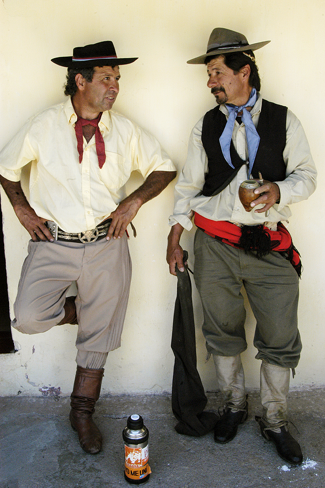
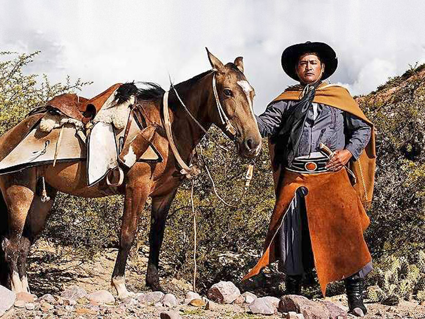
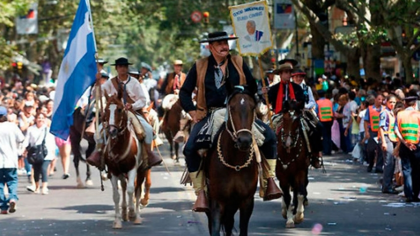

Gaucho est le nom utilisé pour désigner l'habitant caractéristique des plaines et des zones adjacentes de l'Argentine, de l'Uruguay, du Paraguay, du Brésil (Río Grande del Sur), également de la zone sud du Chili (Région de Los Lagos, Région d'Aysén et Région de Magallanes), dans la région sud de la Bolivie dans tout le département de Tarija et le Chaco de Chuquisac, au cours du XVIIe siècle jusqu'au milieu du XIXe siècle.
Il était identifié par sa condition de cavalier habile et par son lien avec la prolifération du bétail dans la région ; En outre, par les activités économiques et culturelles qui en découlent, notamment la consommation de viande et l'utilisation du cuir.
Concernant leur métier, les systèmes de travail imposés par certains propriétaires terriens après l'indépendance ont façonné le régime clientéliste particulier des ouvriers des champs. Et quant à leur mode de vie, ils avaient un style pseudo-nomade.
La femme gaucho est traditionnellement appelée « china » (du quechua : fille et, par extension, femme), « paisana », « guaina » (sur la côte nord), « gaucha » et « prenda ».
La figure du gaucho dans les cultures argentine, paraguayenne et uruguayenne, ainsi que dans la région du Rio Grande do Sul (Brésil) et en Patagonie chilienne, est considérée comme une icône nationale qui représente la tradition et les coutumes rurales. Les gauchos ont combattu lors des guerres d'indépendance et civiles.
La littérature dite gaucho s'est formée autour de sa figure, dont l'axe thématique principal était la dénonciation de l'injustice sociale, qui a culminé dans les livres El gaucho Martín Fierro (1872) et Le retour de Martín Fierro (1879).
Martin Fierro, symbole gauchezco Argentin
Puisque Martín Fierro est considéré comme la « Bible du Gaucho », il semble pertinent de l'utiliser comme base principale pour l'analyse du mythe du gaucho matrero.
Ce poème de José Hernández a été écrit en 1872 sous le titre "El Gaucho Martín Fierro" et sa suite "Le retour de Martín Fierro" est sorti en 1879. Il a la particularité de ne pas être écrit correctement dans la forme cultivée de la langue espagnole. , mais que la façon de parler du gaucho est phonétiquement copiée. Grâce à ce texte épique et poétique, le gaucho a cessé d'être un antisocial et un « hors-la-loi » et a acquis son image de héros national argentin. Très probablement, ce poème est l'un des livres nationaux des Argentins.
Tout d’abord, cet ouvrage répond à un contexte historique bien particulier, celui du début de la conquête du désert. De nombreux gauchos furent incorporés de force dans l’armée nationale. Eh bien, c'est précisément ce qui arrive à Martín Fierro au début du poème. A travers ce texte, l'auteur parvient à se faire entendre et à faire écho à ses propositions en faveur de la cause des gauchos. Il raconte l'histoire d'un gaucho dont le caractère héroïque et fondamentalement indépendant a été approprié par les Argentins comme représentant d'un caractère national. Il dénonce avec un ton fortement critique les abus dont sont victimes les exclus ruraux.
N'obéissant qu'à son désir de liberté, le héros n'acceptera jamais de se soumettre à ses chefs militaires, ce qui provoquera sa fuite et son amitié avec Cruz, un policier qui devient un criminel en protégeant Fierro contre une attaque injuste de ses compagnons. Finalement, il quitte le ranch avec Cruz et ils décident de se rendre sur les terres indigènes.
A la lecture de cet ouvrage, apparaissent quelques éléments caractéristiques de la vie et des coutumes du gaucho. Le gaucho est très simple quant à ses instruments : cheval, facón, poncho, ils couvrent le problème du transport, du travail, de la défense et du logement. Chacun des instruments semble avoir plusieurs usages : le cheval est une monture et une compagnie, et il sert également à protéger son dos lors des combats ; Le facón est un instrument de travail et de défense, et le poncho est utilisé contre le froid et la pluie, pour dormir et, enroulé autour d'un bras, pour se battre. En tant qu'aliment, le rôti est parfaitement complété au niveau diététique par le maté, une herbe amère qui se boit en infusion dans de l'eau chaude. Et, pour vous remonter le moral, la guitare puis la cruche de gin pour vous aider à « être en transe ». Quant à l'architecture gauchesca, c'était l'austère ranch créole en pisé avec un toit de paille à pignon, le poêle servait à "mateear", cuisson du rôti et maintien au chaud en hiver, le four rond en terre cuite servait à faire du pain et d'autres choses. des préparations, par exemple des empanadas (le rôti était préparé par les hommes, les autres repas par les femmes) ; À proximité du ranch, il y avait généralement un puits d'eau douce appelé citerne (surtout si elle avait une bordure) ou "seau" ou "jagüel", il y avait aussi des abreuvoirs pour les animaux et des palenques pour retenir les chevaux.
Le gaucho, en plus de savoir prendre soin de son ranch, de ses chevaux et de son bétail, doit maîtriser un art qui comporte du ballet et beaucoup de jeu, où la vie est en jeu : le duel créole. Dans le Martín Fierro sont décrits les duels qui constituent un mélange de techniques astucieuses, de mouvements de danse et d'un pari de courage.
Puisque le travail des gauchos n'exige pas de tâches collectives, la seule communauté existante n'est pas celle du travail mais du plaisir et les danses de la pulpería sont le seul moment social pour une population isolée les unes des autres. Au début, le narrateur demande au lecteur la permission de chanter. Le besoin d'un public, d'un groupe social dépositaire de ce qui est chanté, est fondamental et dans Martín Fierro des dialogues apparaissent entre le chanteur et le public. Le langage symbolique est très riche et tout le processus narratif se réfère à un modèle écologique du cycle de la nature.
A cause de la « loi sur le vagabondage » établie depuis Bernardino Rivadavia, le gaucho devient une sorte d'esclave car, s'il ne « concha » pas de nourriture dans un ranch dont le patron signe « le bulletin de vote » (qui certifie qu'il travaille pendant son séjour) lorsque la police l'arrête sans certificat, elle l'envoie aux milices frontalières pour « délit de vagabondage ». Puisque, d'un autre côté, on lui refuse absolument l'accès à la terre pour la travailler pour lui-même, il constitue une masse de travail presque libre, à moins qu'il ne choisisse de se rebeller contre cette injustice en devenant un « gaucho matrero ».
Le gaucho vit constamment dans un espace extérieur ; Son seul « intérieur » était « l’intérieur de son corps ». Son habitat est la plaine de la Pampa, qui, géologiquement, est une plaine alluviale remplie par sédimentation. Il est important de le savoir puisque la topographie de la Pampa est une sorte de « mer embaumée », aussi horizontale qu’une table de billard. En raison des précipitations insuffisantes dues aux pluies annuelles, seules les herbes basses poussent, n'atteignant pas l'humidité nécessaire à la formation des forêts. En conséquence de tout cela, le gaucho (et avant lui, l'Indien) est une sorte de navigateur nomade d'une mer verte infinie (« le désert », comme on l'appelait au siècle dernier, puisque les arbres existants furent ensuite plantés par l'homme) où il doit se laisser guider par le soleil et les étoiles pour ne pas se perdre.
Folklore Gaucho
Sur la base économique de l'élevage extensif, une culture propre à la région, sensiblement identique, bien que dans les modalités locales se distinguait. Cette culture traditionnelle de l'élevage et du cheval a généré un type humain et social similaire, le gaucho d'Argentine et d'Uruguay, le gaucho du Rio Grande do Sul et la Patagonie chilienne.
La vie équestre, le régime carnivore, les éléments rudes, les vents toniques de l'océan et de la pampa, le rendent mince, résistant et agile. Certains attachaient leurs cheveux avec le bandeau de l'Indien, d'autres mettaient le chapeau de ventre d'âne sur leurs cheveux dénoués ; Tout le monde utilisait la botte du poulain et le chiripá. Le désert et la solitude le rendent taciturne et silencieux (bien que selon Atahualpa Yupanqui l'expert puisse distinguer le discours du gaucho des plaines du gaucho des zones montagneuses "le premier parle comme s'il criait pour mieux se faire entendre au loin, le second parle à voix basse pour éviter les avalanches"). La liberté et l'abondance le rendent fier, hospitalier et loyal.
Du vainqueur il reçoit le cheval et la guitare ; de l'Indien le poncho, le bandeau, le compagnon et les boleadoras. Leur langue est un mélange d'espagnol archaïque avec une certaine influence des andalousismes et des éléments indigènes, auxquels s'ajoutent plus tard des voix portugaises et africaines.
Les gauchos sont aussi de grands cavaliers, excellents dans les pratiques équestres, leurs sports favoris étant l'équitation gaucho et le dressage gaucho, le canard, les courses en carré, le ringfight, le jeu des cannes, le necking, la corde, et la capture au moyen de boleadoras et de lasso du cheval, le viseo (dont le gérondif s'habille) est également courant, un duel créole simulé dans lequel au lieu de facones (puisque le but n'est pas de blesser ou de tuer qui que ce soit dans le visio, mais plutôt de pratiquer un gaucho clôtures), des bâtons ou des morceaux de canne couverts de suie sont utilisés. Au XXe siècle sont apparus des jeux gauchos comme la polka sur chaise, le rastrín, le jeu des tachos et l'exercice des tropillas entablada, qui sont passés d'une pratique courante à un exemple d'habileté gaucho (l'adjectif " entablada " ne signifie pas que les chevaux sont ceints par des planches ou un dispositif similaire, mais parce que dans la langue traditionnelle des gauchos, on appelle " tablada " ou, familièrement " la tablada ", toute grande surface de terrain entourée de poteaux, " palos a pique" ou "tables" dans l'enceinte desquelles sont abrités et élevés les troupeaux de chevaux).
Souvent, le cheval d'un gaucho était tout ce qu'il possédait au monde. Un gaucho sans cheval (cheval) a cessé d'être un gaucho, chose très difficile, car les chevaux abondent dans la campagne argentine.
Leurs tâches consistaient essentiellement à déplacer le bétail entre les champs de pâturage ou vers des sites de commercialisation tels que le port de Buenos Aires. L'erreur consiste à marquer au feu le signe du propriétaire du bétail. L'entraînement des poulains était une autre de ses activités régulières. L'apprivoisement était un métier particulièrement apprécié dans toute l'Argentine et les concours de dressage lors des festivals restent en vigueur.
Le régime principal du gaucho était d'abord le rosbif, puis la chèvre et le mouton, bien que le vrai gaucho cuisinait presque n'importe quelle viande si nécessaire. Les quelques viandes qu'il avait comme tabous étaient celles de ses amis inconditionnels : le cheval, le chien et même le chat domestique. Principalement dans le nord-ouest de l'Argentine (bien qu'il soit répandu sous diverses formes dans presque tout le pays), le « locro » fait partie de l'alimentation, un ragoût à base de maïs (ou d'un autre composant végétal) avec de la viande.
La boisson alcoolisée la plus consommée jusqu'à la fin du XIXe siècle était le gin, importé alors en quantités importantes et à des prix abordables, principalement de Hollande.
Les gauchos buvaient également l'infusion typique appelée maté, traditionnellement préparée dans une gourde évidée en sirotant l'infusion à travers une ampoule. L'eau du maté est chauffée (sans bouillir) sur une cuisinière dans un récipient appelé bouilloire ou caldeira (les deux noms correspondent au même récipient qui fait penser à une théière).
Ils se retrouvaient dans les épiceries, lieu d'approvisionnement des zones rurales, où se faisaient les échanges et la socialisation. Les résidents des voyageurs payants et de passage s'y rassemblaient. Ils buvaient des boissons alcoolisées (canne brûlée, gin, vin, demeure), jouaient au taba et aux cartes (par exemple tour), ou se livraient à divers types de duels sans effusion de sang comme le malambo (à l'origine une compétition de tap-tapping entre hommes) et les chahuts. sont des guitares ou des courses de chevaux appelées cuadreras, ou "jineteadas" d'habileté équestre (anneau, dressage, canard, etc.), occasionnellement et pour diverses raisons (les plus courantes étaient "pour les jupes", c'est-à-dire la rivalité pour l'amour du femmes) Des duels créoles avaient lieu avec des facones, pour cette éventualité presque tous les gauchos s'entraînaient fréquemment en utilisant, au lieu des facones, des bâtons à pointes carbonisées ; Un tel entraînement est aussi un jeu souvent appelé "viseo" ou "spotting" puisque les concurrents doivent prédire rapidement, principalement avec leurs yeux, comment l'adversaire va attaquer.
En plus d'être des cavaliers, muletiers, bergers et dompteurs experts (jusqu'au début du XXe siècle, il était courant que les gauchos mâles commencent à monter à cheval dès la petite enfance), de nombreux gauchos se distinguaient par leur connaissance du territoire et de ses conditions climatiques, à une telle capacité On lui donne le nom (des marins du XVIe siècle) de "baquía" et les gauchos les plus experts en "baquía" sont appelés "baquianos" ou "baqueanos", une autre capacité proche de la baquía est celle de " tracker". , un pisteur est celui qui peut suivre l'empreinte ou la trace d'un autre être humain ou d'un animal sur plusieurs lieues, ces deux qualités ont été louablement rappelées par Domingo Faustino Sarmiento.
De nombreux gauchos, pour la plupart classés par les autorités de leur époque comme des « bandits ruraux », ont acquis la dévotion populaire.

Gauchos partageant un Mate

Gaucho avec son cheval

Défilé traditionnel argentin
Créé par Alejo Tenaglia - Service Civique LEGTA Pau Montardon